00:02我们来看看如何实现特征缩放，以处理那些取值范围差异很大的特征，将它们缩放到彼此具有可比一性的值范围。
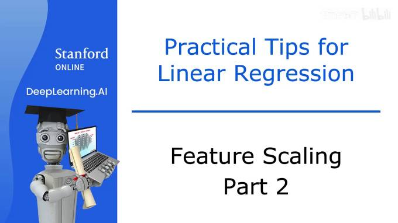
00:13那么，你实际上如何缩放特征呢？
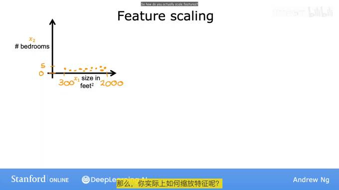
00:16嗯，如果 x 一的范围从三到两千，一个得到 x 一缩放版本的方法是取每个原始的 x 一值并除以两干，即该范围的最大值。

00:30于是，缩放后的 x 一的范围将从零点一五到一。
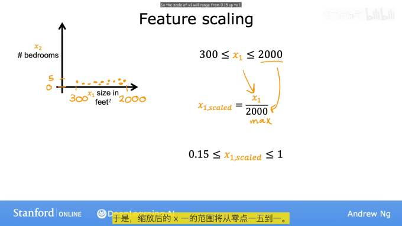
00:36类似地，由于 x 二的范围从零到五，你可以通过取每个原始的 x 二并除以五，这同样也是最大值，来计算二的缩放版本。
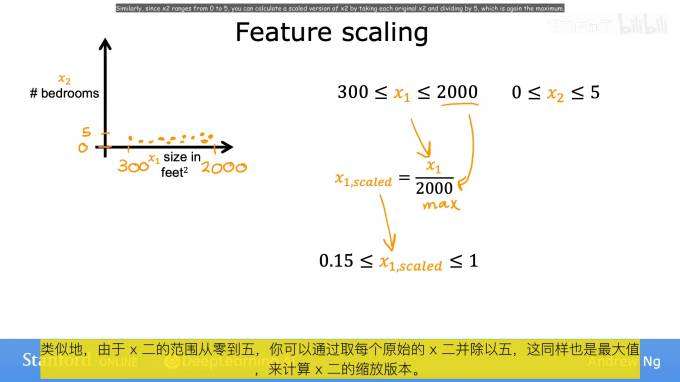
00:49于是，缩放后的 x 二的范围现在从零到一。
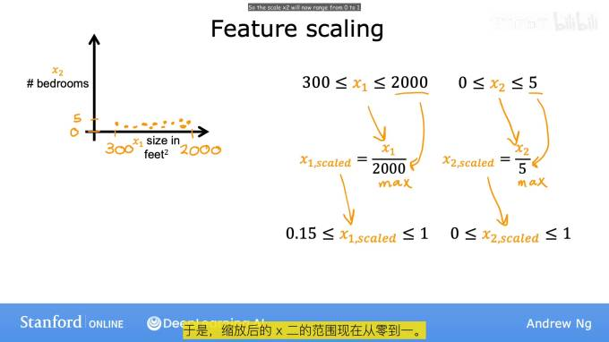
00:54因此，如果你将缩放后的 x 一和 x 二画在图表上，可能看起来像这样。
01:00除了除以最大值之外，你还可以做所谓的均值归一化。

01:07这看起来是这样的：你从原始特征开始，然后重新缩放它们，使得它们两者都以零为中心。
01:16因此，之前它们只有大于零的值，现在它们既有负值也有正值，但大约通常在负一到正一之间。
01:28所以要计算 x 一的均值归一化，首先找到你训练集中 x 一的平均值，也称为均值，我们称这个均值为 mu 一，这是希腊字母 mu。


01:43举例来说，你可能发现特征一的平均值 mu 一是六百平方英尺。
01:49那么，让我们取每一个 x 一，减去均值 mu 一，然后再除以差值两千减去三百，其中两千是最大值，三百是最小值。
02:05如果你这样做，你会得到归一化后的 x 一，其范围从负零点一八到零点八二。
02:14类似地，要对 x 二进行均值归一化，你可以计算特征二的平均值。
02:21比方说，mu 二可能是二点三。
02:25然后你可以取每一个 x 二，减去 mu 二，并除以五减零。
02:33同样，最大值五减去最小值零。
02:37均值归一化后的 x 二现在范围从负零点四六到零点五四。
02:46因此，如果你使用均值归一化后的 x 一和 x 二来绘制训练数据，它可能看起来像这样。
02:53还有最后一种常见的重新缩放方法，叫做乙分数归一化。
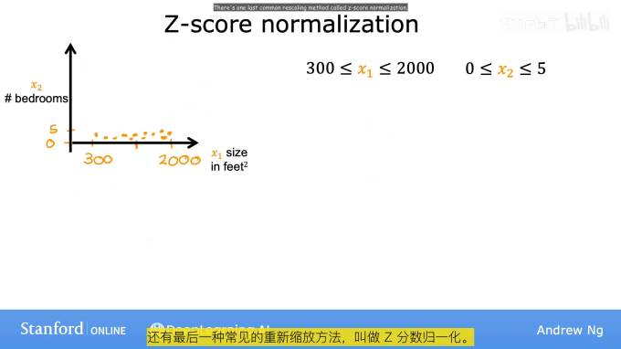
02:59要实现乙分数归一化，你需要计算每个特征的一个叫做标准差的量。
03:07如果你不知道什么是标准差，别担心。
03:11你不需要为这门课了解它。
03:13或者，如果你听说过正态分布或钟形曲线，有时也称为高斯分布，这就是正态分布的标准差看起来。
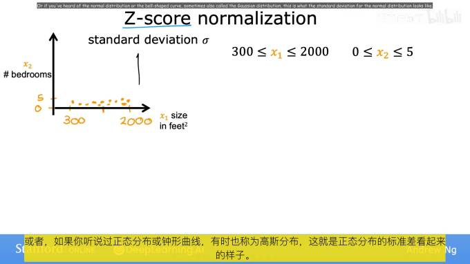
03:25但如果你没听说过这些，你也不必担心。
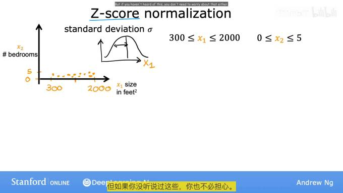
03:28但如果你确实知道什么是标准差，那么要实现乙分数归一化，你首先要计算每个特征的均值 mu 以及标准差，标准差通常用小写希腊字母 sigma 来表示。
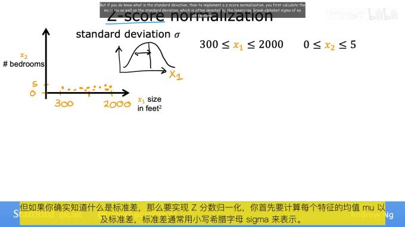
03:46举个例子，也许特征一的标准差是四百五十，均值是六百。

03:54然后要对 x 一进行乙分数归一化，取每一个 x 一，减去 mu 一，然后除以标准差，我将用来。
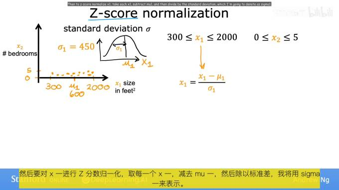
04:07你可能会发现，Z 分数归一化后的 x 一现在范围从负零点六七到三点一。

04:18同样，如果你计算第二个特征的标准差是一点四，均值是二点三，那么你可以计算 x 二减去 mu 二除以 sigma。m。

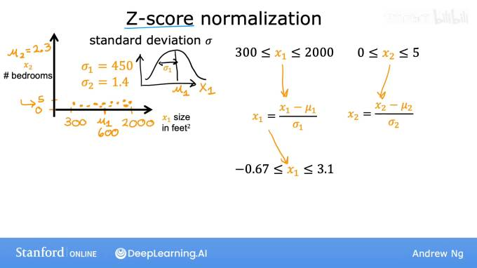
04:33在这种情况下，Z 分数归一化后的 x 二现在可能范围从负一点六到一点九。
04:43所以，如果你在图表上画出归一化后的 x 一和 x 二的训练数据，它可能看起来像这样。
04:51作为经验法则，在进行特征缩放时，你可能希望达到的目标是，对于每个特征 x，让特征的范围大概在负到正一附近的某个地方。
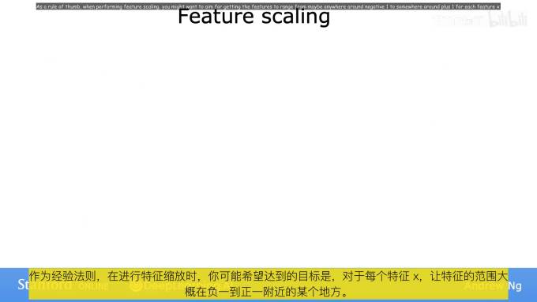
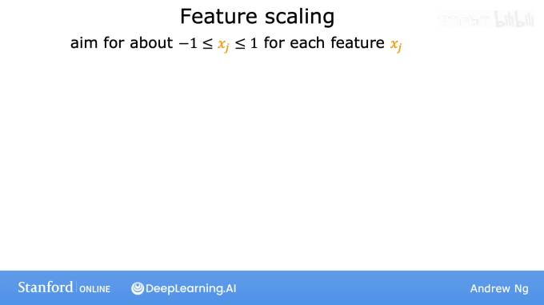
05:06但这些值，负一和正一，可以稍微宽松一点。
05:12因此，如果特征的范围从负三到正三，或者从负零点三到正零点三，所有这些都完全没问题。
05:22所以，如果你有一个特征 x 一，其值最终介于零到三之间，这不成问题。
05:29如果你愿意，可以重新缩放它，但如果你不重新缩放，它也应该可以正常工作。
05:37或者，如果你有一个不同的特征 x 二，其值介于负二到正零点五之间，同样，这也没问题。
05:46重新缩放它没有坏处，但如果你不去管它，也可能没问题。
05:52但如果另一个特征，比如这里的 x 三，其范围从负一百到正一百，那么这就有着和近似负一到正一的范围非常不同的取值范围。n。
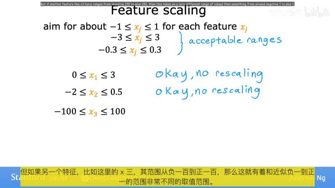
06:05所以你最好重新缩放这个特征 x 三，使其范围更接近负一到正一。
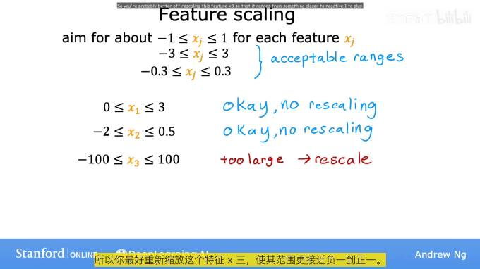
06:15同样地，如果你有一个特征 x 四，它的取值非常小，比如介于负零点零零一和正零点零零一之间那么这些值太小了。
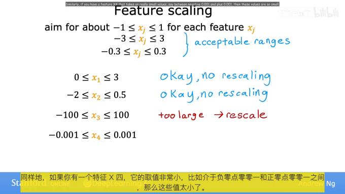

06:28这意味着你可能也想重新缩放它。
06:32最后，如果你的特征 x 五，例如一位医院病患的体温测量值，范围从九十八点六华氏度到一百零五华氏度呢？。
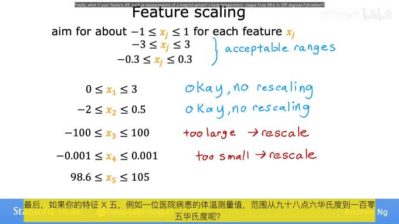

06:45在这种情况下，这些值大约在一百左右，相较于其他缩放后的特征而言实际上非常大，这确实会导致梯度下降运行得更慢。Andrew。

06:57所以，在这种情况下，特征重新缩放很可能会有所帮助。

07:02进行特征重新缩放几乎从来没有任何坏处，所以当不确定时，我鼓励你就直接去做。
07:13借助这个小技巧，你通常能够让梯度下降运行得快得多。
07:23而在使用了或不使用特征缩放的情况下，当你运行梯度下降时，你又如何能知道，如何能检查梯度下降是否真的在工作，是否正在为你找到全局最小值或接近它的某个值？
07:39在下一个视频中，我们来看看如何识别梯度下降是否正在收敛。
07:45然后，在那之后的视频中，这将引向关于如何为梯度下降选择一个好的学习率的讨论。